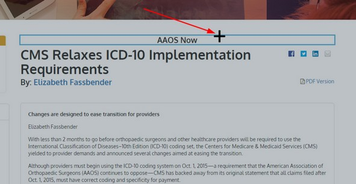
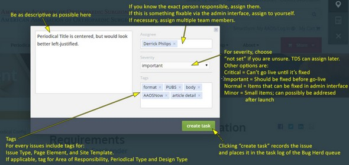

Bugherd¶
Using Bugherd¶
After you’ve created your account including setting up your password, please make sure you login on the Bugherd.com site before every testing session.
You can login here: https://www.bugherd.com/users/sign_in
{kind=link}
{kind=link}
Reporting an Issue (Creating a Task)¶
To report an issue on the page you’re currently on, click the + icon on the toolbar.¶
Next, select an area of the screen or an element on the screen you wish to report on¶
{kind=link}
As an admin user you will see the following:

The admin version of the Create Task form has the following sections:¶
Description: Fill out with enough detail to communicate the issue. Be as concise as possible, but include any pertinent details.
Assignee: If you know the exact person responsible, assign them.
If this is something fixable via the admin interface, assign toyourself. If necessary, you may assign multiple team members.
Severity: For severity, choose “not set” if you are unsure. TDS can assignlater. Other options are:
Critical = Can’t go live until issue is fixed
Important = Should be fixed before go-live, but not critical
Normal = Usually Items that can be fixed in admin interface
Minor = Small items; can possibly be addressed after launch
Tags: Tags are very important to help organize and prioritize tasks correctly. At the end of these instructions you will find a Bugherd Tag Legend. There are 6 types of Tag. The first three youshould apply to each task you create:
Issue Type (Required): Nearly all issues will be one of three types: Data, Format or Functionality.
Data: The wrong text or images appear on a page, or don’t appear when they should. Be sure to compare to the original page on the current aaos.org site to confirm the source page shows something different than the Ektron site page.
Examples: An article lists the wrong author. An issue lists the wrong articles. The published date for an article is incorrect. A different image appears for an identical article on the current aaos.org site.
Format: Use this tag to point out issues related to how something looks.
Examples: A sentence on a page seems to have a different font type or font size than the rest of the article. The paragraph headings on a page are all a different color than they are expected to be. The caption under a figure has a font size that is way too small.
PLEASE NOTE: Most, if not all “format” issue types are expected to be fixable by you and your team in the Ektron admin interface. If the format issue is within the content portions of the page, you should make yourself the Assignee on the create task form as well so you can create a task list you and your team can use to fix the content after the final conversion.*
Function: Something on the site happens unexpectedly, or doesn’t it happen when it should. Most often these are site “bugs” that the developers need to fix.
Examples: Clicking ona main item in the mega menu fails to show the dropdown sub-menu. Filtering items on the store listing page by the facets in the left navigation produces unexpected results. When logged in as a non-member you can access content that should be only accessible to members.
Site Template (Required):
Each page on the site uses an Ektron custom template. Most are self-evident (ie. Landing Page, Content Page, Article Page) and you may use the appropriate tag for the page template if you can identify it. If you are not sure, use the tag template and TDS staff will identify the template and place the proper tag.
Page Element (Required):
Each page is made up of various elements that can be identified using one of the tags in the Page Element list. If you don’t see a page element tag that applies, use the tag element and TDS will assign the proper tag.
Area of Responsibility (If applicable):
Use this tag if the content you are creating a task for is specific to your area. The tags are identical to the values in the Assigned Department column in the Master Content Inventory spreadsheet.
Periodical Type (if applicable):
Use if referring to one of the landing pages or article detail pages for AAOS Now or one of the journals.
Design Type: (if applicable):
Use ONLY if the issue you are reporting is related to a specific rendering of the page. Use desktop if you only see the issue on the desktop version of the site, and mobile if you only see the issue when you view the mobile version.
Other Items:
404 Errors: For any link that doesn’t work or returns a 404 error, you will need to submit a ticket on the original page, not the 404 page. After you get a 404 error you may hit the back button in your browse then click the link to submit a ticket.
{kind=link}
Bugherd Tag Legend¶
Please use all tags that apply for each BugHerd ticket you submit. Enter them one at a time (you don’t need to separate with a comma or semi-colon).
Tag Type Bugherd Tag What to Use it For Issue Type format Issues related to formatting such as font type, font size, font color, bold/italics/underline, link color, image size/placement, etc. Issue Type data Issues related to incorrect data being converted (ie wrong article title, wrong article links in an issue, wrong author, incorrect images on a page, etc.) Issue Type function Issues related to functionality of the web site (ie incorrect permissions to view/not view a page, dropdown menu for Education doesn’t work, when choosing facets to narrow search results nothing happens, etc.) Site Template homepage Any issue (data, format, functionality) on the homepage Site Template landing page Any issue (data, format, functionality) on a landing page Includes Landing Page A, Landing Page B, Landing Page C, Subspeciality Landing Page, Periodical/AAOS Now Main Landing Page, Periodical/AAOS Now Issue Landing Page Site Template content page Any issue (data, format, functionality) on a page using the Content template Site Template article detail Any issue (data, format, functionality) on a page using the Article detail template Site Template search page Any issue (data, format, functionality) on the search page or pertaining to search results outside of the store Site Template AM site Any issue (data, format, functionality) on a template for the Annual Meeting microsite Site Template course listing Any issue (data, format, functionality) on a event listing page in the store A listing page contains a list of courses or events based on a calendar daypart (day/month/year) or another facet (course type, course format, etc.). Site Template course detail Any issue (data, format, functionality) on a event detail page for a specific course or event An event detail pages lists all of the pertinent information for a single event or course. Site Template product listing Any issue (data, format, functionality) on a product listing page in the store A listing page contains a list of items in the store either related to a single topic/category, or filtered by a facet in the left navigation bar. Site Template product detail Any issue (data, format, functionality) on a product detail page for a specific item in the store Site Template committee listing Any issue (data, format, functionality) on the committee listing page A listing page contains a list of committees related to a single topic/category. Site Template committee detail Any issue (data, format, functionality) on the page that lists all the details for a specific committee. Site Template video gallery Any issue (data, format, functionality) on the Video Gallery page, including the video player.
Tag Type Bugherd Tag What to Use it For Site Template podcast Any issue (data, format, functionality) on the podcasts page. Site Template my library Any issue (data, format, functionality) found on the My Library page Site Template my aaos Any issue (data, format, functionality) found on the My AAOS page Page Element mega menu Any issue (data, format, functionality) with the Mega Menu Page Element dashboard Any issue (data, format, functionality) with the member dashboard element Page Element non-targeted card Any issue (data, format, functionality) with a content card that is non-targeted (doesn’t change depending on certain conditions of logged-in user) Examples would include external ads, periodical highlights, etc. Page Element targeted card Any issue (data, format, functionality) with a content card that contains targeted content (content can change depending on certain conditions of logged-in user).
Examples would be Upcoming Events, Targeted Internal Ad, etc.
Page Element left nav Any issue (data, format, functionality) related to the dynamic navigation in the left column Page Element body Any issue (data, format, functionality) related to the content within the body of the page This is usually the main content that is added to the page via the Ektron admin tool, or came over to the site during conversion. Page Element footer Any issue (data, format, functionality) related to the footer on the bottom of each site page Page Element store nav Any issue (data, format, functionality) related to the facet navigation in the left hand menu on store pages Page Element periodical links Any issue (data, format, functionality) related to the Periodical Links located in the upper left column of all the periodical and AAOS Now pages Page Element image slider Any issue (data, format, functionality) related to the image slider found on some landing pages Page Element tabbed content Any issue (data, format, functionality) related to the tabbed content element found on some landing pages Page Element video player Any issue (data, format, functionality) related to the video player on any given page. Page Element hero image Any issue (data, format, functionality) related to the hero image OR the breadcrumb navigation contained within Page Element content list Any issue (data, format, functionality) related to content list element found on Landing Page C Area of Responsibility CMS Convention and Meeting Services Dept. Area of Responsibility DEMECO Dept of Electronic Media, Exams and Course Operations Area of Responsibility SPEC Dept of Specialty Societies Area of Responsibility EDU Education Dept.
Tag Type Bugherd Tag What to Use it For Area of Responsibility EXEC Executive Dept. Area of Responsibility OGR Office of Government Relations Area of Responsibility HR Human Resources Dept. Area of Responsibility INTL International Dept. Area of Responsibility IS Dept of Technology and Data Services Area of Responsibility LEGAL Legal Dept. Area of Responsibility MBRSVCS Member Services Dept. Area of Responsibility MKTG Marketing Dept. Area of Responsibility PR Public Relations Dept. Area of Responsibility PUBS Publications Dept. Area of Responsibility RSRCH Research and Scientific Affairs Dept. Periodical Type AAOSNOW Any issue (data, format, functionality) found in any of the AAOS Now description, full article or main/issue landing pages Periodical Type OKOJ Any issue (data, format, functionality) found in any of the OKOJ abstract, full article or main/issue landing pages Periodical Type JBJS Any issue (data, format, functionality) found in any of the JBJS abstract or main/issue landing pages Periodical Type JAAOS Any issue (data, format, functionality) found in any of the JAAOS abstract or main/issue landing pages Design Type desktop Any format or functionality issue found ONLY in the desktop version of a page Design Type mobile Any format or functionality issue found ONLY in the mobile version of a page